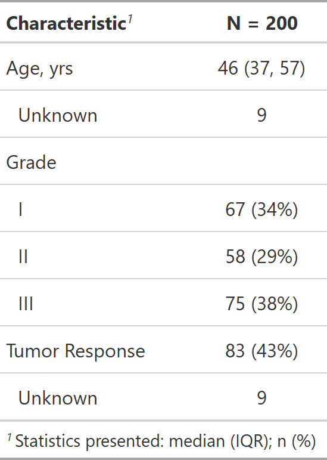
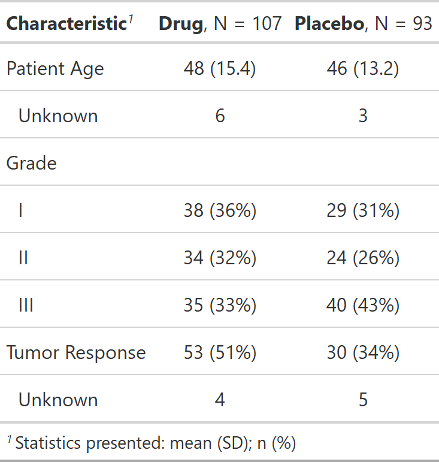

The tbl_summary function calculates descriptive statistics for
continuous, categorical, and dichotomous variables. Review the
tbl_summary vignette
for detailed examples.
tbl_summary( data, by = NULL, label = NULL, statistic = NULL, digits = NULL, type = NULL, value = NULL, missing = c("ifany", "always", "no"), missing_text = "Unknown", sort = NULL, percent = c("column", "row", "cell"), group = NULL )
Arguments
| data | A data frame |
|---|---|
| by | A column name (quoted or unquoted) in |
| label | List of formulas specifying variables labels,
e.g. |
| statistic | List of formulas specifying types of summary statistics to
display for each variable. The default is
|
| digits | List of formulas specifying the number of decimal
places to round continuous summary statistics. If not specified,
|
| type | List of formulas specifying variable types. Accepted values
are |
| value | List of formulas specifying the value to display for dichotomous variables. See below for details. |
| missing | Indicates whether to include counts of |
| missing_text | String to display for count of missing observations.
Default is |
| sort | List of formulas specifying the type of sorting to perform for
categorical data. Options are |
| percent | Indicates the type of percentage to return. Must be one of
|
| group | DEPRECATED. Migrated to add_p |
Value
A tbl_summary object
select helpers
Select helpers
from the \tidyselect\ package and \gtsummary\ package are available to
modify default behavior for groups of variables.
For example, by default continuous variables are reported with the median
and IQR. To change all continuous variables to mean and standard deviation use
statistic = list(all_continuous() ~ "{mean} ({sd})").
All columns with class logical are displayed as dichotomous variables showing
the proportion of events that are TRUE on a single row. To show both rows
(i.e. a row for TRUE and a row for FALSE) use
type = list(all_logical() ~ "categorical").
The select helpers are available for use in any argument that accepts a list
of formulas (e.g. statistic, type, digits, value, sort, etc.)
statistic argument
The statistic argument specifies the statistics presented in the table. The
input is a list of formulas that specify the statistics to report. For example,
statistic = list(age ~ "{mean} ({sd})") would report the mean and
standard deviation for age; statistic = list(all_continuous() ~ "{mean} ({sd})")
would report the mean and standard deviation for all continuous variables.
A statistic name that appears between curly brackets
will be replaced with the numeric statistic (see glue::glue).
For categorical variables the following statistics are available to display.
{n}frequency{N}denominator, or cohort size{p}formatted percentage
For continuous variables the following statistics are available to display.
{median}median{mean}mean{sd}standard deviation{var}variance{min}minimum{max}maximum{p##}any integer percentile, where##is an integer from 0 to 100{foo}any function of the formfoo(x)is accepted wherexis a numeric vector
type argument
tbl_summary displays summary statistics for three types of data:
continuous, categorical, and dichotomous. If the type is not specified,
tbl_summary will do its best to guess the type. Dichotomous variables
are categorical variables that are displayed on a single row in the
output table, rather than one row per level of the variable.
Variables coded as TRUE/FALSE, 0/1, or yes/no are assumed to be dichotomous,
and the TRUE, 1, and yes rows are displayed.
Otherwise, the value to display must be specified in
the value argument, e.g. value = list(varname ~ "level to show")
Example Output
Example 1

Example 2

Example 3

See also
See tbl_summary vignette for detailed examples
Other tbl_summary tools:
add_n(),
add_overall(),
add_p.tbl_summary(),
add_q(),
add_stat_label(),
bold_italicize_labels_levels,
inline_text.tbl_summary(),
inline_text.tbl_survfit(),
modify_header(),
tbl_merge(),
tbl_stack()
Examples
tbl_summary_ex1 <- trial[c("age", "grade", "response")] %>% tbl_summary() tbl_summary_ex2 <- trial[c("age", "grade", "response", "trt")] %>% tbl_summary( by = trt, label = list(age ~ "Patient Age"), statistic = list(all_continuous() ~ "{mean} ({sd})"), digits = list(age ~ c(0, 1)) ) # for convenience, you can also pass named lists to any arguments # that accept formulas (e.g label, digits, etc.) tbl_summary_ex3 <- trial[c("age", "trt")] %>% tbl_summary( by = trt, label = list(age = "Patient Age") )